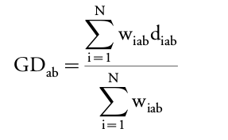
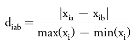

Functional Diversity (FD) index : total branch length of a functional dendrogram
(hierarchical classification of the species according to their functional features)
The choices of the distance and of the classification method are of crucial importance since they may lead to different results.
Euclidean distance :
with :
a, b : species to be comparedN : number of quantitative traitsxia, xib : values of trait i for each speciesGower’s distance : can cope with mixed scale types of data :
 with 
with :
a, b : species to be compared
N : number of quantitative traits
diab : dissimilarity between species for trait i
xia, xib : values of trait i for each species
If xia or xib is missing, wiab = 0.
If no missing value, all quantitative traits and each trait equally weighted :
Some algorithms are well known to cause a distortion of space.
Clustering methods for constructing a hierarchical classification :
| Acronym | Clustering method | Signification |
|---|---|---|
| SL | Single linkage | Fusion of the closest objects |
| CL | Complete linkage | Fusion of the most distant objects |
| UPGMA | Unweighted pair group method using arithmetic averages | Fusion of clusters when the similarity reaches the mean inter cluster similarity value |
| WPGMA | Weighted pair group method using arithmetic averages | Mean dissimilarity between two items is the sum of the weighted dissimilarities |
| UPGMC | Unweighted pair group centroid method | Fusion of the clusters with closest centroids |
| WPGMC | Weighted pair group centroid method | Fusion of the clusters with closest centroids after adjustment for group sizes |
| Ward | Ward’s method | Minimization of the within-group sum of squares |
| Consensus algorithms | Synthesis from different dendrograms into one classification which highlights the concordant parts between the various methods relative to the parts that disagree | |
Cophenetic correlation :
DM = 1 - c² with c : cophenetic correlation coefficient (e.g. Pearson correlation coefficient)DM = 0 : no distortion between distance matricesDefined a threshold for validity of a dendrogram: the dissimilarity between initial distance and cophenetic distance matrices, DM, must be less than 0.36 (corresponding to the 0.8 correlation coefficient limit).
Aims to :
The effects of distances, clustering methods, correlations between traits and species richness on dissimilarity were explored using a four factor ANOVA.
Dissimilarity was influenced by all the factors and their interactions. However, the complexity of interactions between factors made identification of the direct effects of each factor on DM difficult. Consequently, no combination of distance and clustering methods gave systematically the best representation of species from the multidimensional functional space. Nevertheless, among all combinations, UPGMA/UPGMC consensus trees seemed to be most often used.
None of the clustering algorithms (even UPGMA) perfectly corresponds to the distribution of objects in a multidimensional space. Therefore, it is worth gathering information from different clustering methods into consensus trees.
However cophenetic correlation does not take into account the transformation of the trait matrix into a distance matrix. More studies are needed to assess the impact of that transformation and of the use of other distances (Manhattan, Bray-Curtis, etc.).